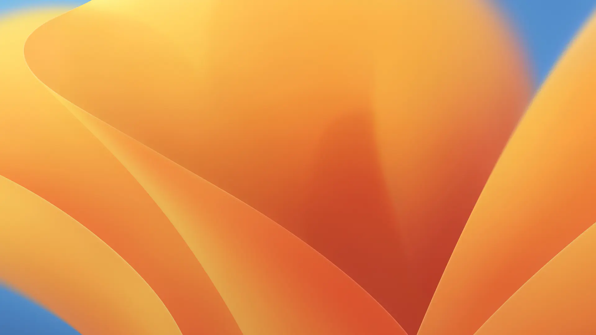

Ventura
July 11,2023

macOS Montereyの後継として、2022年6月7日（日本時間）のWWDC 2022の基調講演で2022年秋にリリース予定と発表された。macOSの19番目のメジャーリリース。バージョンナンバーは13で、OSの名称は、カリフォルニア州ベンチュラ郡にあるサンブエナベンチュラという都市の通称のベンチュラに由来する。
これまでのmacOS同様に、The Open Groupに正式に認定されたUNIXである。